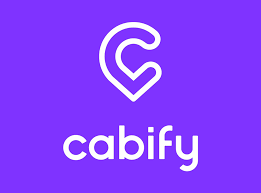

Uber (Quiero arrancar)
 Uber es una empresa multinacional de tecnología con sede en San Francisco, Estados Unidos. Se destaca por
proporcionar servicios de transporte a través de su plataforma en línea y su aplicación móvil. A través de
la aplicación de Uber, los usuarios pueden solicitar un viaje en automóvil con un conductor privado
registrado en la plataforma.
Uber es una empresa multinacional de tecnología con sede en San Francisco, Estados Unidos. Se destaca por
proporcionar servicios de transporte a través de su plataforma en línea y su aplicación móvil. A través de
la aplicación de Uber, los usuarios pueden solicitar un viaje en automóvil con un conductor privado
registrado en la plataforma.
Uber opera en numerosas ciudades de todo el mundo y se ha convertido en una alternativa popular al
transporte público tradicional y a los taxis. La plataforma permite a los usuarios solicitar un viaje, ver
el tiempo estimado de llegada del conductor, rastrear el recorrido en tiempo real y pagar por el servicio a
través de la aplicación.
Uber ofrece diferentes opciones de servicio, como UberX, que es la opción más
común y económica, Uber Black, que ofrece vehículos de gama alta y conductores profesionales, UberPOOL, que
permite compartir el viaje con otros pasajeros que viajan en una dirección similar, y Uber Eats, que se
enfoca en la entrega de alimentos a domicilio.
La aplicación de Uber facilita el proceso de pago, ya que la tarifa se calcula automáticamente en función de
la distancia recorrida y el tiempo de viaje. El pago se realiza a través de la aplicación utilizando métodos
de pago previamente registrados, como tarjetas de crédito o servicios de pago en línea.
Sin embargo, es importante tener en cuenta que la disponibilidad de Uber y las regulaciones relacionadas con
su operación pueden variar en diferentes países y ciudades debido a consideraciones legales y normativas
locales.
Didi (Quiero arrancar)
Didi Chuxing, conocido comúnmente como Didi, es una empresa de transporte compartido con sede en China. Es
una de las compañías de movilidad más grandes y reconocidas en el país. Didi ofrece servicios similares a
los de Uber, permitiendo a los usuarios solicitar viajes en automóvil a través de su aplicación móvil.
Fundada en 2012, Didi comenzó como una plataforma de reserva de taxis en línea y ha evolucionado para
incluir una amplia gama de servicios de movilidad. La empresa ha expandido su oferta para incluir opciones
como Didi Express (servicio de automóvil privado), Didi Premier (servicio de automóvil premium), Didi Luxe
(servicio de automóvil de lujo), Didi Bus (servicio de transporte público en autobús) y Didi Hitch
(compartir viajes con desconocidos en un automóvil particular).
La aplicación de Didi permite a los usuarios solicitar un viaje, ver la ubicación y el tiempo estimado de
llegada del conductor, seguir el recorrido en tiempo real y realizar pagos a través de métodos electrónicos
integrados en la plataforma.
Es importante destacar que Didi opera principalmente en China y ha expandido su presencia a algunos otros
países, pero su disponibilidad y regulaciones pueden variar según la ubicación geográfica.
Cabify (Quiero arrancar)
 Cabify se enfoca en proporcionar servicios de transporte premium y de calidad, diferenciándose de otras opciones de transporte compartido. La empresa se caracteriza por ofrecer vehículos de alta gama y conductores profesionales capacitados, lo que brinda una experiencia de viaje más sofisticada.A través de la aplicación de Cabify, los usuarios pueden solicitar un viaje, ver la información del conductor asignado, seguir el recorrido en tiempo real y realizar pagos de manera segura. La aplicación también proporciona detalles sobre el costo estimado del viaje y opciones de servicio adicionales, como asientos para niños o vehículos adaptados para personas con movilidad reducida. Es importante tener en cuenta que la disponibilidad y regulaciones de Cabify pueden variar según la ubicación geográfica, y los servicios específicos ofrecidos pueden diferir en cada país o ciudad donde opera.